Retailer reference 1USER-SUPPLIED PORTRAIT
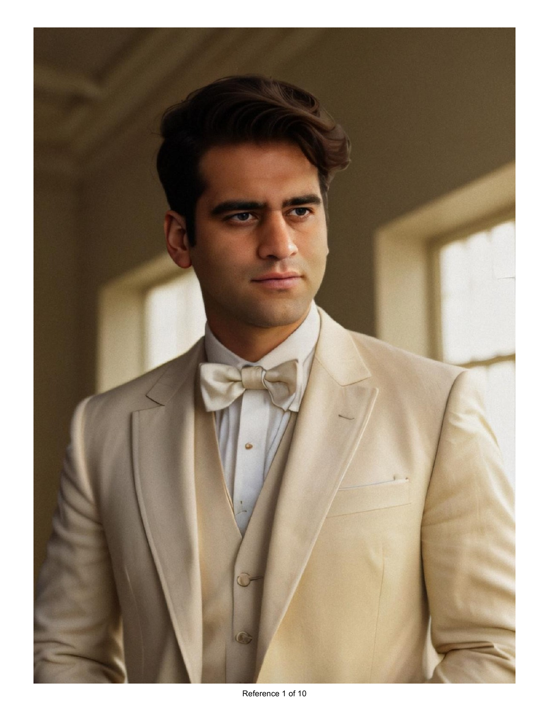
Review the complete story before more footage generation. 32 shot panels combine existing generated frames with locally drawn interface schematics. Runtime follows intent. Each decision applies to the proposed shot; it does not certify the source frame as final footage.
Vedaxi master identity · VDX voice entry · Virtual Pip and Atlas · Explicit customer consent · 480p delivery
New user-supplied portrait references supersede the drifting generated face. These ten local pages establish likeness; existing retailer scene frames below still need replacement after shot approval. Recommended office direction: reference 3’s open-collar ivory shirt, with references 9 and 10 anchoring facial identity. Wardrobe selection remains for review.

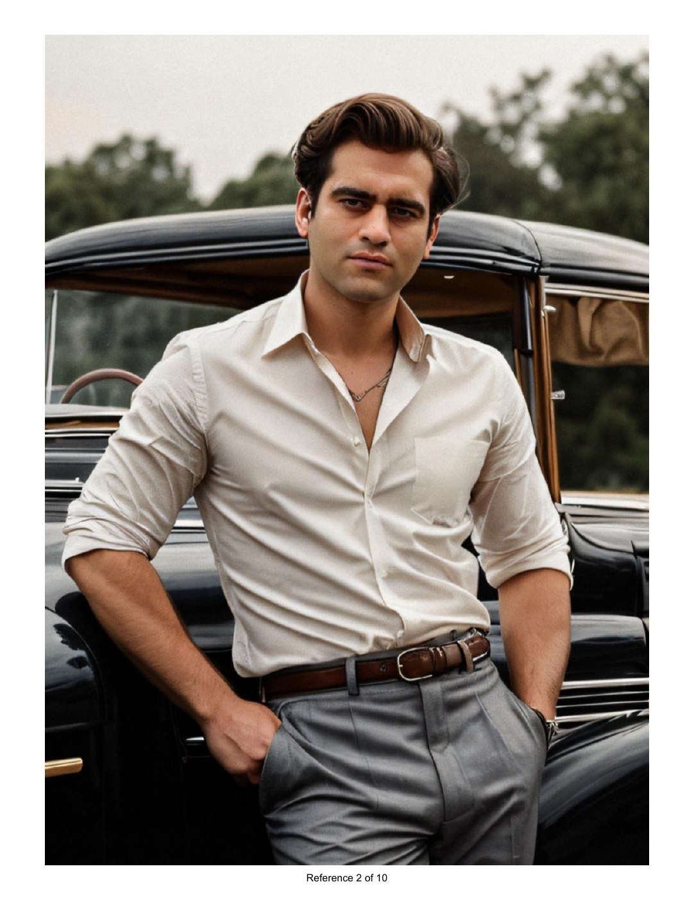
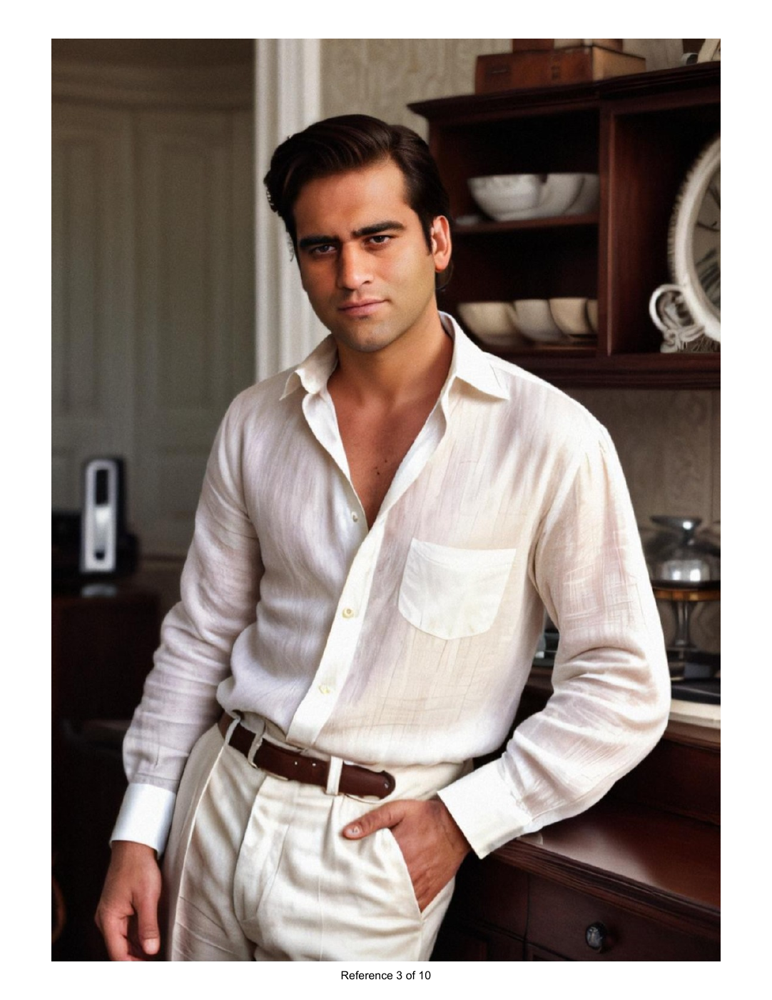
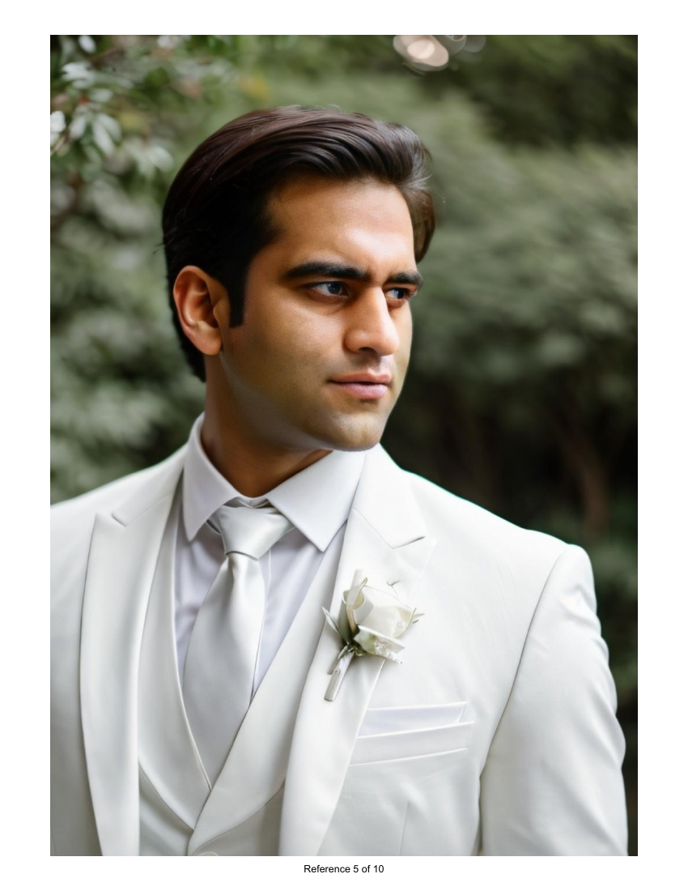
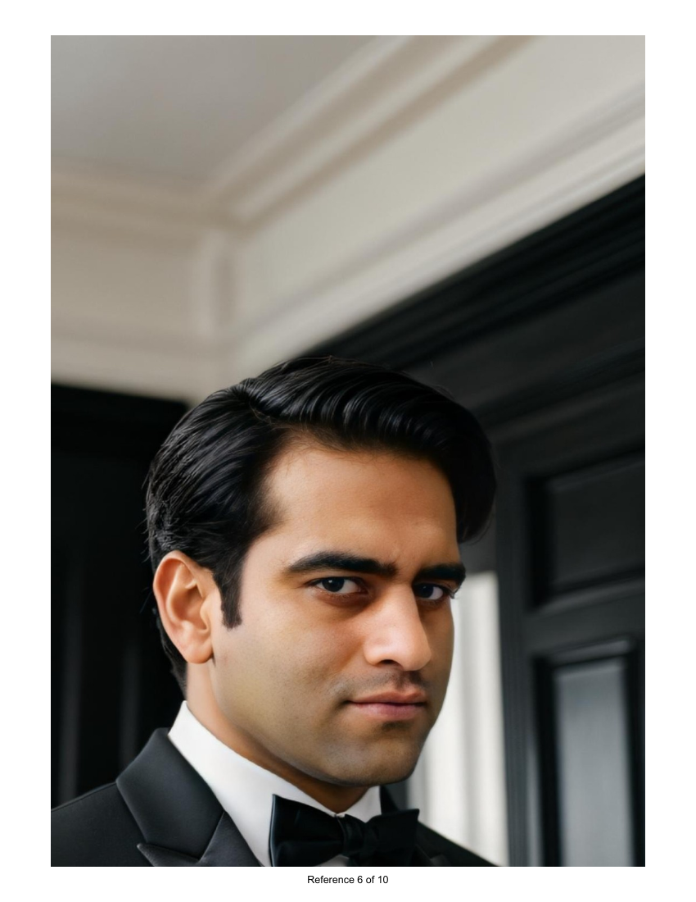
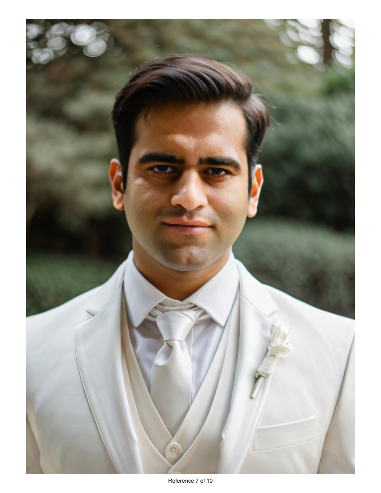
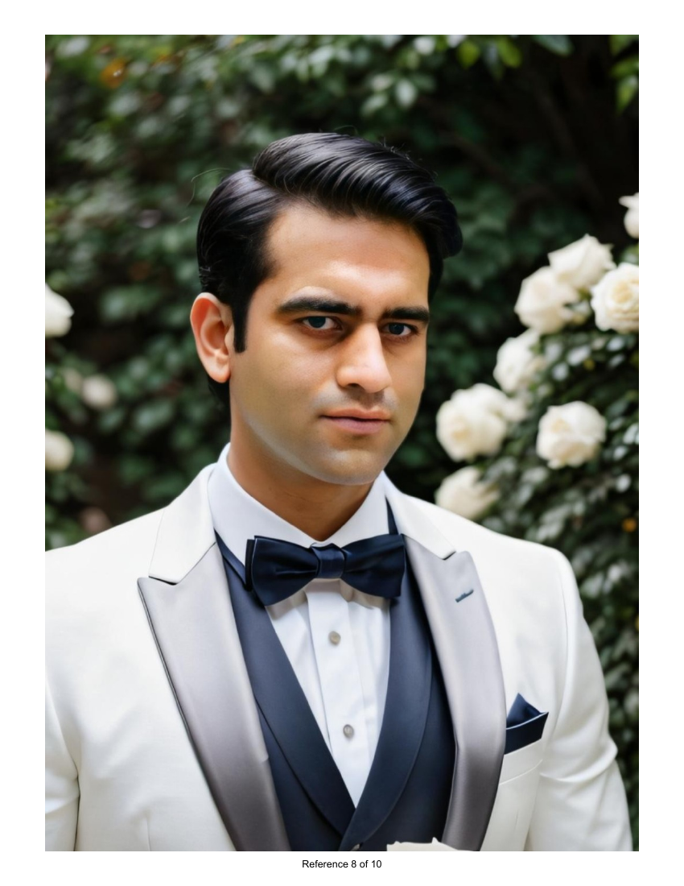
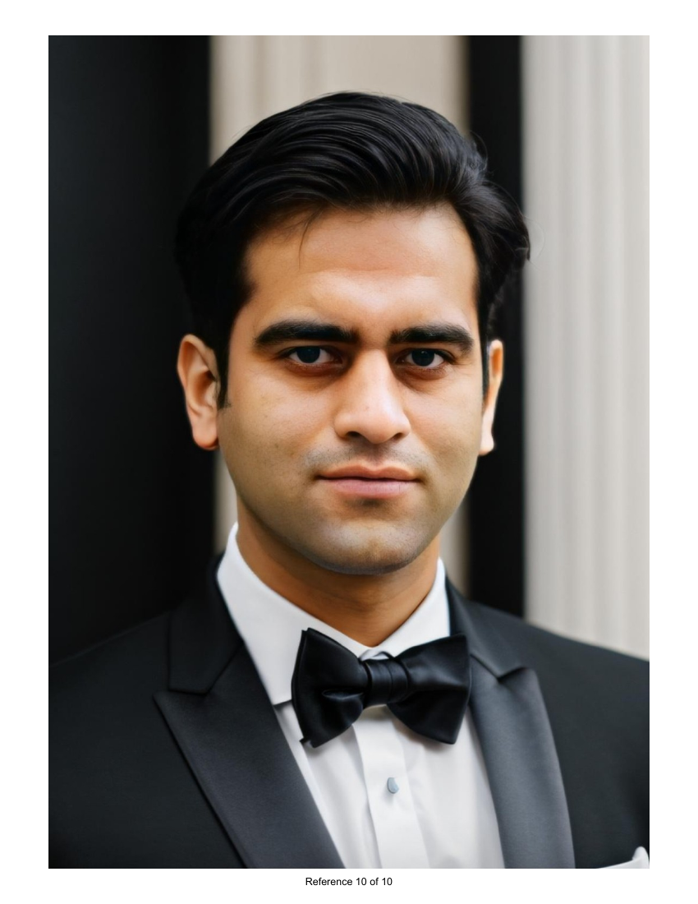
Narration excerpt / editorial anchor
We built technology to set ourselves free. Then came software. Applications. Dashboards. Workflows. Integrations. We kept building more powerful tools. And somehow, we became the ones doing more work.
SOUND · Mechanical startup. Restrained electronic tension.
Story purpose Establish the promise in the present day.
Camera / action Black to modern screen illumination. Locked close insert; no ancient computer.
Final UI / copy We built technology to set ourselves free.
Schematic establishes composition and meaning; it is not a finished shot or approved brand artwork.
Story purpose Show increasing tool power and coordination burden.
Camera / action Modern windows multiply through controlled 2D animation. No historical montage.
Final UI / copy Applications · Dashboards · Workflows · Integrations
Schematic establishes composition and meaning; it is not a finished shot or approved brand artwork.
Story purpose Give the customer a concrete goal and deadline.
Camera / action Medium reaction, then over-shoulder email insert.
Final UI / copy Job offer · Product Operations Associate · Starts next Monday · 16 GB minimum
Source frame is provisional. Background continuity and generated symbols still need final QC.
Story purpose Introduce the other owner and a different goal.
Camera / action Medium office shot, then seller-system insert.
Final UI / copy Orders · Enquiries · Fulfilment
Source frame is provisional. Background continuity and generated symbols still need final QC.
Narration excerpt / editorial anchor
Somewhere along the way, we forgot why we built it all. Getting something done shouldn't mean coordinating every tool ourselves. We should simply tell it what we want.
SOUND · Notifications accumulate, then cut to silence.
Story purpose Show that specifications, budget and delivery are disconnected.
Camera / action Straight-on controlled product comparison; intercut with customer.
Final UI / copy $749 / 8 GB: below requirement · $1,249 / 16 GB: over budget · $999 / 16 GB: separate comparison SKU
Schematic establishes composition and meaning; it is not a finished shot or approved brand artwork.
Story purpose Show the businessman acting as the integration layer.
Camera / action Gaze switches between laptop and monitor; use readable screen inserts.
Final UI / copy Marketplace → Advertising → Social
Source frame is provisional. Background continuity and generated symbols still need final QC.
Story purpose Make manual coordination visible.
Camera / action Close UI insert of a lead copied into CRM and stock checked separately.
Final UI / copy CRM · Inventory · Support
Schematic establishes composition and meaning; it is not a finished shot or approved brand artwork.
Story purpose Bring both stories to the same bottleneck.
Camera / action Parallel split-screen; disconnected panels fill the composition, then freeze.
Final UI / copy Different goals. The same bottleneck.
Schematic establishes composition and meaning; it is not a finished shot or approved brand artwork.
Narration excerpt / editorial anchor
Express your intent. Let the internet coordinate the work. Not another tool to operate. A whole new way for the internet to work.
SOUND · Silence at freeze. A coherent discovery motif enters.
Story purpose Turn the film from friction to coordinated work.
Camera / action Frozen panels; silence; one clean request appears in VDX.
Final UI / copy At least 16 GB · Around $1,000 · Before Monday · Financing if eligible
Schematic establishes composition and meaning; it is not a finished shot or approved brand artwork.
Story purpose Explain the mechanism without internal architecture.
Camera / action Windows reveal useful capabilities; champagne paths connect them.
Final UI / copy Catalogue · Inventory · Pricing · Delivery · Finance · Payment · Support
Schematic establishes composition and meaning; it is not a finished shot or approved brand artwork.
Story purpose Show discovery, composition and execution as one fluid path.
Camera / action Controlled camera glide across a coherent graphic, no giant dashboard.
Final UI / copy Intent → Understanding → Discovery → Composition → Coordination → Execution → Outcome
Schematic establishes composition and meaning; it is not a finished shot or approved brand artwork.
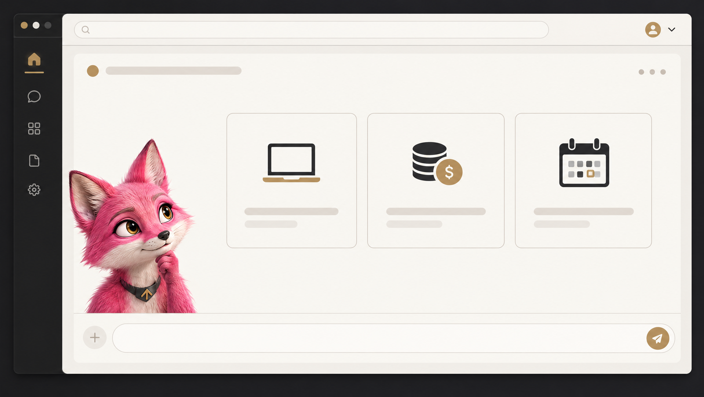
Story purpose Tie the customer agent to her intent and owner.
Camera / action Pink signal resolves into Pip inside the customer window.
Final UI / copy Customer agent · Her requirements and permissions
Source frame is provisional. Background continuity and generated symbols still need final QC.

Story purpose Tie the business agent to authorised commercial capabilities.
Camera / action Blue signal resolves into Atlas attached to inventory window.
Final UI / copy Retailer agent · Stock, margin and fulfilment rules
Source frame is provisional. Background continuity and generated symbols still need final QC.
Story purpose Show why successful coordination can be reused.
Camera / action A capability route is saved; a second intent adapts it.
Final UI / copy Reuse a successful path · Adapt providers and constraints
Schematic establishes composition and meaning; it is not a finished shot or approved brand artwork.
Narration excerpt / editorial anchor
Her agent represents her requirements and preferences. The retailer’s agent represents what the business can actually offer—its stock, prices, promotions and fulfilment options. Neither agent controls the other. Each works within the permissions and interests it has been given.
SOUND · Measured discovery; small interface cues.
Story purpose Make budget, deadline and specifications explicit.
Camera / action Small ear perk and head tilt; requirement tiles stay fixed.
Final UI / copy Requirements understood. Budget and delivery are non-negotiable.
Source frame is provisional. Background continuity and generated symbols still need final QC.
Story purpose Demonstrate independent evaluation, not automatic agreement.
Camera / action Pip raises eyebrow; over-budget offer is flagged.
Final UI / copy Preferred model · 16 GB · $1,249 · Over budget
Schematic establishes composition and meaning; it is not a finished shot or approved brand artwork.
Story purpose Explain the retailer incentive for a better offer.
Camera / action Eyes scan inventory; one deliberate claw gesture.
Final UI / copy Alternative model · 32 GB · In stock · Slow-moving inventory
Source frame is provisional. Background continuity and generated symbols still need final QC.
Narration excerpt / editorial anchor
The agents can do more than pass messages. They can discover options neither side had considered, test them against real constraints and negotiate a better fit—without either side giving up control.
SOUND · Restrained rhythmic momentum; no agent speech.
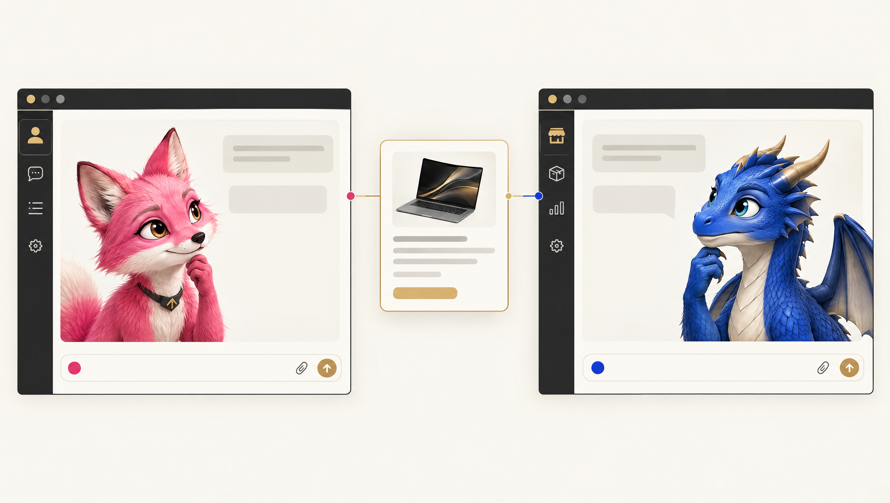
Story purpose Show a concrete mutually useful proposal.
Camera / action Card travels between separate windows; agents keep equal prominence.
Final UI / copy 32 GB · $999 · Bag · Extended warranty · Express delivery
Source frame is provisional. Background continuity and generated symbols still need final QC.
Story purpose Make negotiation and conflicting interests visible.
Camera / action Pip gestures toward terms; Atlas pauses.
Final UI / copy That meets the specs. But show me the full value. → Can you include delivery before Monday?
Source frame is provisional. Background continuity and generated symbols still need final QC.
Story purpose Show a commercially grounded answer.
Camera / action Inventory/margin/fulfilment indicators checked; restrained nod.
Final UI / copy Margin protected · Delivery window checked
Source frame is provisional. Background continuity and generated symbols still need final QC.
Story purpose Reach a proposal without committing the customer.
Camera / action Atlas nods; Pip looks back toward customer message area.
Final UI / copy Confirmed within the available fulfilment window. → That works. I’ll ask the customer to approve.
Source frame is provisional. Background continuity and generated symbols still need final QC.
Narration excerpt / editorial anchor
Before anything is committed, she sees the complete offer and approves it. If she chooses financing, the financing provider assesses eligibility independently and returns terms for her to review. Her private financial information doesn’t become the retailer’s property. Consent stays with the customer.
SOUND · Music lowers; approval is deliberate and clear.
Story purpose Make informed consent possible.
Camera / action Clean full-screen summary; hold for comprehension.
Final UI / copy 32 GB · $999 · Bag · Extended warranty · Before Monday · Review offer
Schematic establishes composition and meaning; it is not a finished shot or approved brand artwork.
Story purpose Preserve privacy, independent eligibility and optional terms.
Camera / action Separate provider window; terms return for customer review.
Final UI / copy Check eligibility → Review actual terms → Choose whether to authorise
Schematic establishes composition and meaning; it is not a finished shot or approved brand artwork.
Story purpose Show a deliberate human decision before execution.
Camera / action Read first, then a single tap. Screen insert must establish what was approved.
Final UI / copy Approve purchase · Authorise payment / chosen financing
Source frame is provisional. Background continuity and generated symbols still need final QC.
Narration excerpt / editorial anchor
Once she approves, the work moves. The order is placed, stock is reserved and delivery is coordinated. And for the business, the same model turns disconnected operational tasks into coordinated execution. The owner sets the objective and the boundaries. The system handles the authorised work.
SOUND · Optimistic lift, practical packing and delivery sounds.
Story purpose Demonstrate action beyond another checklist.
Camera / action Controlled status transitions only after approval.
Final UI / copy Order authorised → Stock reserved → Fulfilment started → Tracking
Schematic establishes composition and meaning; it is not a finished shot or approved brand artwork.
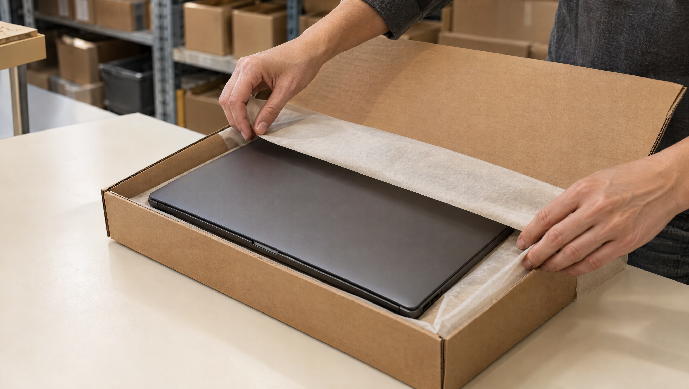
Story purpose Make the coordinated outcome tangible.
Camera / action Close static packing shot, tissue folds around laptop.
Final UI / copy No added copy required
Source frame is provisional. Background continuity and generated symbols still need final QC.
Story purpose Pay off the customer story.
Camera / action She opens the delivered laptop; restrained relief.
Final UI / copy Delivered before her start date
Source frame is provisional. Background continuity and generated symbols still need final QC.
Story purpose Show the second use case beyond the laptop purchase.
Camera / action Owner gives one goal; independent capabilities coordinate work.
Final UI / copy Move slow-moving stock · Protect margin · Ask for approval on exceptions
Schematic establishes composition and meaning; it is not a finished shot or approved brand artwork.

Story purpose Pay off the promise of freedom.
Camera / action Quiet terrace moment, relaxed posture, no screen return.
Final UI / copy No dashboard. A human outcome.
Source frame is provisional. Background continuity and generated symbols still need final QC.
Narration excerpt / editorial anchor
And these are only two examples. As more providers expose useful capabilities, more agents can coordinate across them. Every new capability can make the network more useful. Every successful path can make the next outcome easier to achieve. The next internet won’t just connect applications. It will connect capabilities, agents and outcomes. Elastic Web. The Agent-Native Internet.
SOUND · Cinematic resolution and restrained sonic signature.
Story purpose Establish infrastructure beyond shopping.
Camera / action Pull back into independent providers and abstract other agents.
Final UI / copy Commerce · Logistics · Finance · Travel · Productivity · Support
Schematic establishes composition and meaning; it is not a finished shot or approved brand artwork.
Story purpose Explain compounding value without invented metrics.
Camera / action A successful route adapts to another intent and providers.
Final UI / copy Every useful capability enables more possible paths
Schematic establishes composition and meaning; it is not a finished shot or approved brand artwork.
Story purpose Land the product and thesis.
Camera / action Graphite end card; exact approved arrow and actual fonts at final compositing.
Final UI / copy ELASTIC WEB BY VEDAXI · THE AGENT-NATIVE INTERNET
Schematic establishes composition and meaning; it is not a finished shot or approved brand artwork.